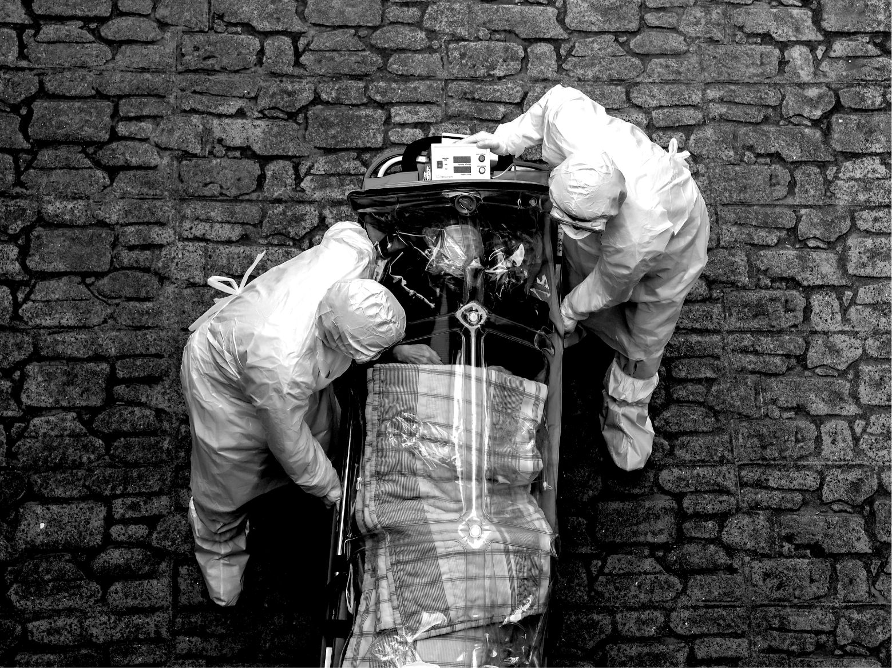

DATE HERE, 2020
BY XXXXXXXXXXXXXXXXXXXX
ANY OTHER ACCREDITION
BY XXXXXXXXXXXXXXXXXXXX
ANY OTHER ACCREDITION
There are more than 200 types of coronaviruses. Some are more familiar to you than you may realise. Many countries use their own criteria to count the number of Covid-19 cases, but more than 3 million people have been officially confirmed to have been infected, with more than 150,000 fatalities.
For want of a vaccine, the HIV epidemic raged for 25 years taking over 35 million, mostly young, lives. In its early years HIV created fear, panic and extremely irrational behaviour, such as excommunicating an infected person from the village, to denying healthcare services. Cuba, one of the earliest countries to diagnose a HIV case, took the public health principle of social isolation to the extreme – quarantining anyone infected with HIV into sanatoriums for two months where they were provided food and intensive preventive education, followed by life imprisonment if caught indulging in risky behaviour upon release.
The Spanish Flu
THE FIRST SIGNS
Six months before the armistice was signed between warring sides to bring down the curtains on World War I in 1918, an ‘unusually fatal’ respiratory disease caught the attention of physicians at a British training camp in Eaples in France. Nearly half of those showing influenza like clinical symptoms were succumbing to the infections. So the Spanish Flu started in France? Some Research seems to suggest that.